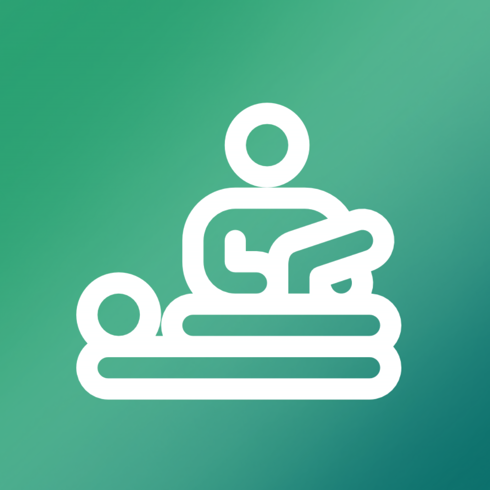
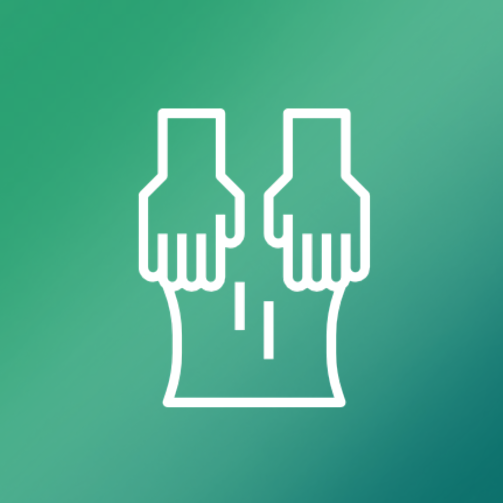
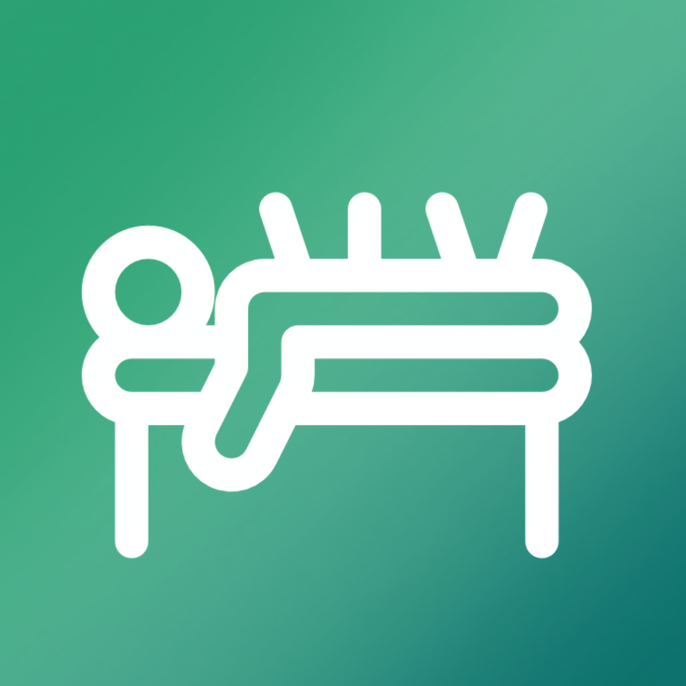
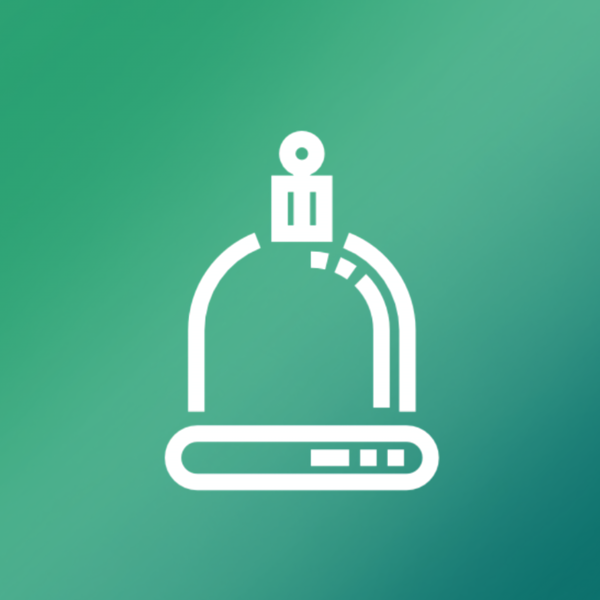
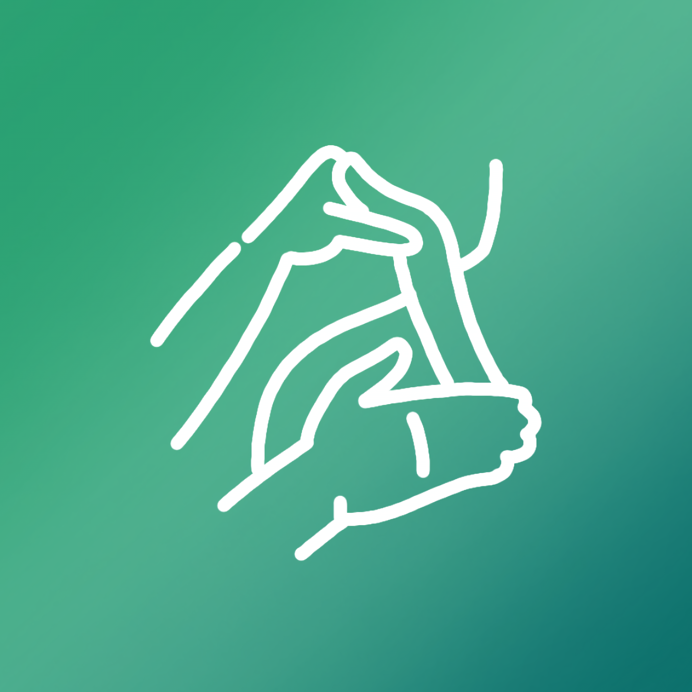
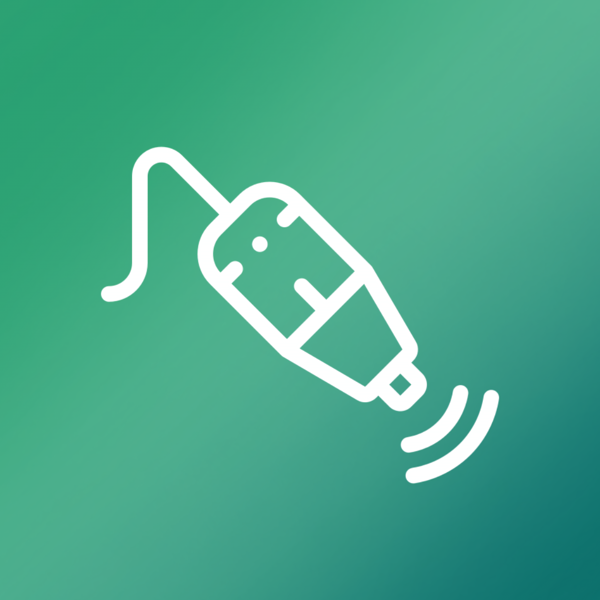
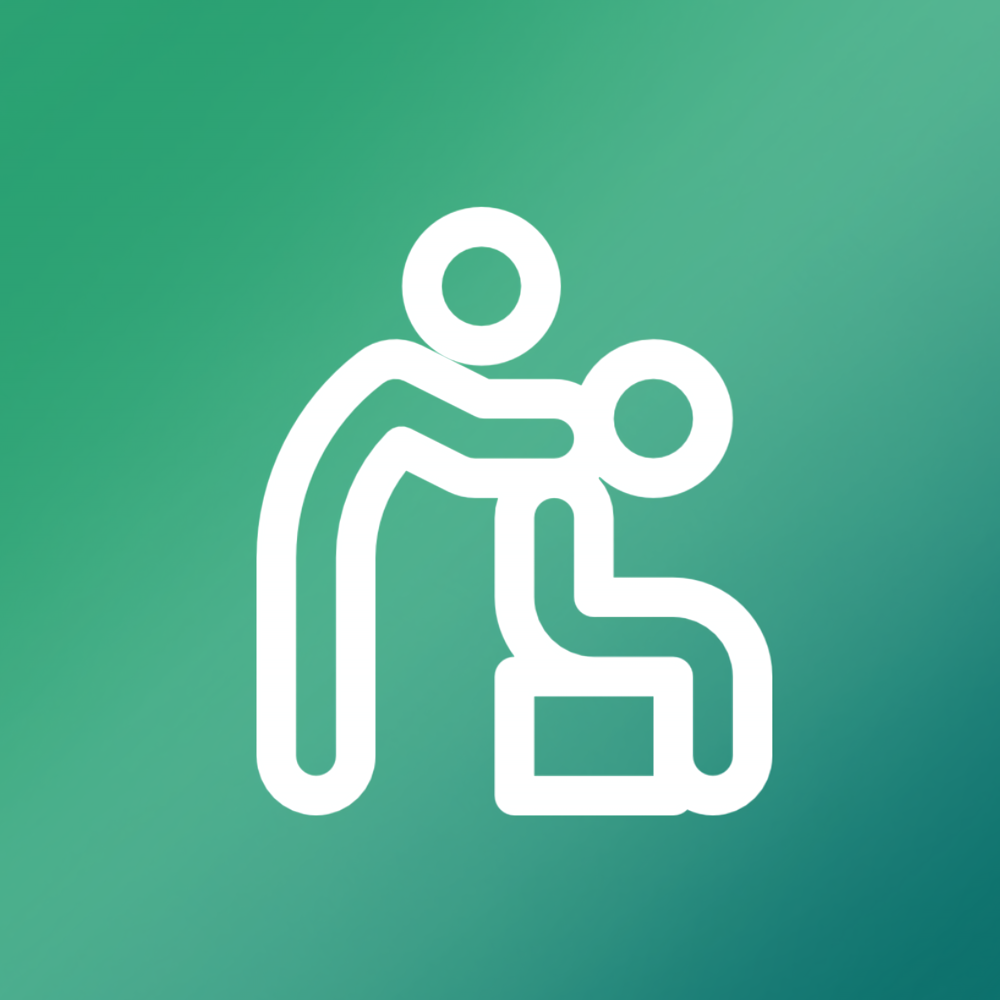

Fisioterapia
Tratamentos personalizados voltados para a prevenção, recuperação e reabilitação física, promovendo mais mobilidade, funcionalidade e qualidade de vida.

Oferecemos atendimento fisioterapêutico personalizado, com foco na prevenção, reabilitação e promoção da saúde. Nossos tratamentos são desenvolvidos de acordo com as necessidades de cada paciente, buscando aliviar dores e proporcionar mais qualidade de vida e bem-estar.

Tratamentos personalizados voltados para a prevenção, recuperação e reabilitação física, promovendo mais mobilidade, funcionalidade e qualidade de vida.

Técnica que atua na redução de tensões musculares e restrições fasciais, auxiliando no alívio de dores e na melhora dos movimentos.

Procedimento utilizado para tratar pontos de tensão muscular, contribuindo para o alívio da dor e a recuperação da função muscular.

Terapia que utiliza ventosas para estimular a circulação sanguínea, reduzir tensões e promover relaxamento muscular.

Bandagem elástica aplicada para oferecer suporte aos músculos e articulações, auxiliando na recuperação e no desempenho funcional.

Terapia com laser de baixa intensidade que auxilia na circulação, no equilíbrio do organismo e no bem-estar geral.

Conjunto de técnicas terapêuticas voltadas para o controle e redução da dor, proporcionando mais conforto e qualidade de vida.
Cuide da sua saúde com atendimento especializado e humanizado. Entre em contato e agende sua avaliação para dar o primeiro passo rumo ao seu bem-estar.
Agende !